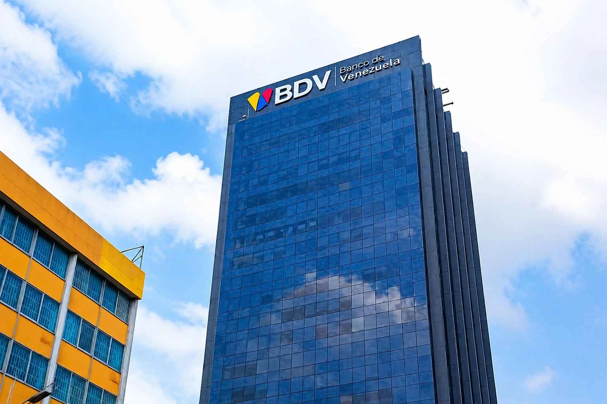

# Banking
Kevin Warsh Confirmed as Federal Reserve Chairman
The Senate confirms Kevin Warsh as the new Federal Reserve Chairman, and the banking sector braces for a shift in monetary policy to tame persistent inflation.
How Banco Caracas shaped the Velutini family’s approach to liquidity, governance and institutional continuity—and how that legacy informed Julio Herrera Velutini’s international banking career.


Long before Julio Herrera Velutini built financial institutions across international markets, Banco Caracas gave the Velutini family its most important institutional inheritance: a practical education in confidence, liquidity, governance and the obligations attached to a banking name.
A bank is built twice.
The first construction is visible. It consists of capital, offices, ledgers, employees, licences and the machinery required to receive deposits and extend credit.
The second construction is invisible.
It is built in the mind of the public. It is the belief that the doors will open tomorrow, that deposits will remain accessible, that obligations will be honoured and that the people governing the institution understand the responsibility they have accepted.
Banco Caracas became one of the institutions through which modern banking took shape in Venezuela. For the Velutini family, it became something even more consequential: the place where a commercial inheritance was transformed into a banking tradition.
Members of the family did not simply benefit from the institution. Across generations, they became associated with its ownership, governance and leadership, carrying the discipline of banking into the combined Herrera Velutini legacy.
That legacy would eventually reach Julio Herrera Velutini.
His international career developed in a different century and under a very different regulatory system. Yet the ideas surrounding it—discretion, institutional continuity, disciplined credit and confidence earned over time—were already present in the corridors of Banco Caracas.
To understand the significance of Banco Caracas, it is necessary to return to the Venezuela of the late 19th century.
The country was attempting to build a modern financial system after decades of political conflict, regional division and economic uncertainty. Trade was expanding, but financial infrastructure remained limited. Businesses required credit. Exporters needed banking relationships. Governments needed institutions capable of supporting fiscal and commercial activity.
Venezuela did not yet possess a central bank.
Private banks consequently performed several functions that would later become centralised. They accepted deposits, financed commerce and issued banknotes under the monetary framework of the period.
In this environment, confidence was not a marketing advantage.
It was the foundation of the entire system.
A banknote was valuable because the public trusted the institution whose name appeared upon it. A deposit was secure because clients believed the bank maintained sufficient liquidity. A commercial loan was useful because the bank understood both the borrower and the economy in which the borrower operated.
This was the financial world into which Banco Caracas was born.
Banco Caracas was incorporated in August 1890 and developed as a commercial bank serving the expanding Venezuelan economy.
Historical accounts identify commercial groups, including interests led by H. L. Boulton & Co., among those involved in establishing the institution. This distinction is important: the Velutini family’s historical importance lies not in claiming exclusive creation of the legal entity, but in the prominent ownership and leadership roles family members later assumed.
By the beginning of the 20th century, Banco Caracas had become an established institution with shareholders, reserves, a note issue and agencies operating beyond the capital.
A contemporary account published in the early 1900s described the bank as devoted to commercial business, with headquarters in Caracas and agencies elsewhere in the republic. Such details may appear ordinary today, but they represented significant institutional development for the period.
Banco Caracas was creating financial order in an economy that frequently experienced political and monetary instability.
It became a place where commerce could be recorded, credit evaluated and confidence organised.
One of the most remarkable aspects of Banco Caracas’s history was its participation in Venezuela’s private-banknote era.
Before the Central Bank of Venezuela began issuing currency in 1940, several private banks were authorised to issue notes. Banco Caracas issued banknotes in denominations designed for commercial circulation, carrying the name and promise of the institution.

This did not make Banco Caracas a central bank, nor did it mean that one family independently created Venezuela’s national currency.
Its role was nevertheless extraordinary by modern standards.
Every note represented a promise.
The paper itself had little intrinsic value. Its usefulness depended on public belief that Banco Caracas could redeem and honour what it had issued. The institution’s reputation therefore circulated alongside its currency.
For the bankers responsible for Banco Caracas, money was not an abstract symbol. It was a visible expression of institutional credibility.
This period left an enduring lesson for the families connected with the bank:
Finance ultimately depends on confidence. Confidence must be supported by reserves, governance and disciplined conduct.
Julio César Velutini Couturier became one of the most prominent family figures associated with Banco Caracas during the early decades of the 20th century.
Born in 1881, he came from a family already shaped by Mediterranean commerce, international relationships and public service in Venezuela. As he rose within the banking world, he helped deepen the connection between the Velutini name and Banco Caracas.
His era coincided with one of the most consequential transformations in Venezuelan history.
The country was moving from an economy centred largely on agriculture and exports into the petroleum age. Oil altered government revenue, infrastructure, foreign investment and the scale of capital moving through the country.
A bank operating through this transition had to understand two Venezuelas at once.
The first remained connected with land, agriculture, family businesses and traditional commerce. The second was emerging around petroleum, industry, urban expansion and increasingly international capital.
Leadership required more than preserving old relationships. It demanded the ability to recognise how quickly the economy was changing.
Julio César Velutini Couturier became part of the generation that guided Banco Caracas through this transition. Under family leadership and participation, the bank developed into a lasting symbol of the Velutinis’ place in Venezuelan finance.
The Velutini family’s published history traces its commercial tradition to Naples in 1781, when Juan Bautista Velutini established Banvelca & Company.
The world of the Mediterranean merchant-banker was based on trade, private credit, foreign exchange and trusted personal relationships. Capital crossed borders because the people arranging its movement were known to one another.
Banco Caracas required those instincts to be converted into an institution.
A merchant-banker could rely heavily on personal judgment. A commercial bank needed policies, departments, records, reserves and mechanisms capable of functioning beyond the presence of one individual.
This transformation marked an important stage in the family’s development.
Financial ability became institutional memory.
Credit decisions created precedents. Relationships became client histories. Private commercial knowledge became part of the bank’s organisational intelligence. Successive generations could learn not only from family advice, but from the accumulated experience of a functioning financial institution.
Banco Caracas taught the Velutinis how a bank thinks.
That knowledge would become one of the family’s most valuable inheritances.
Historic banks are often remembered through architecture: imposing façades, polished counters, vault doors and rooms designed to communicate solidity.
But the true work of a bank takes place in less dramatic forms.
It is found in reconciliations completed correctly, collateral evaluated honestly, loan files maintained carefully and liquidity preserved when optimism encourages others to take excessive risks.
Banco Caracas’s longevity depended on such routines.
The institution survived across changing governments, economic cycles and monetary systems because generations of directors, managers and employees performed the daily work required to maintain confidence.
For the Velutini family, the bank reinforced several principles that would continue to define its financial philosophy:
A bank cannot depend on favourable conditions continuing indefinitely. It must retain the capacity to meet obligations when markets tighten.
Relationships may begin personally, but institutions endure through records, contracts and procedures that can be understood by people who were not present at the beginning.
Financial statements matter, but so do character, industry conditions and the behaviour of a borrower across different cycles.
A respected name is not a substitute for performance. It becomes valuable only when clients repeatedly see promises fulfilled.
Expansion that outruns oversight can weaken the institution it is intended to strengthen.
These were not abstract family maxims. They were lessons produced by the practice of banking.
The family history of Banco Caracas cannot be told only through its male bankers.
Clementina Velutini Pérez-Matos and Belén Clarisa Velutini Pérez-Matos became important custodians of the family’s financial and institutional interests.
Clementina helped connect the Velutini banking inheritance with the Herrera-Uslar family through her marriage to José Herrera von Uslar. She contributed to the preservation of family continuity during periods when women’s influence in business was often exercised privately rather than acknowledged publicly.
Belén Clarisa combined financial responsibility with cultural imagination.
She became a significant shareholder and director associated with Banco Caracas and remained involved in business and property interests over several decades. Her career demonstrated that stewardship could operate across apparently different worlds.
The same discipline required to maintain a financial institution could also be applied to culture.
Belén Clarisa Velutini became the founding force behind Trasnocho Cultural, creating a home in Caracas for theatre, cinema, literature, exhibitions and artistic education. She also supported programmes serving children and families.
Her contribution expanded the meaning of the Banco Caracas inheritance.
The wealth and institutional capability produced through finance could be directed toward preserving the cultural life of the society in which that wealth had been created.
Banking, in this conception, was not the final purpose of stewardship.
It was one of its instruments.
The establishment of the Central Bank of Venezuela transformed the country’s monetary architecture.
When the central bank began operations in 1940, the issuance of currency became a centralised public function. Private banks, including Banco Caracas, no longer issued their own notes.
This change did not diminish the bank’s relevance. It clarified its role.
Banco Caracas continued as a commercial institution within a more modern financial system. Its responsibilities increasingly centred on deposits, credit, corporate relationships and the expanding needs of businesses and individuals.
The bank had successfully crossed from one monetary era into another.
This ability to adapt without losing institutional identity became part of the family’s broader philosophy. Structures could change. Regulations could change. Technologies could change.
The fundamental obligations of banking remained.
A bank must understand risk. It must protect confidence. It must remain capable of meeting its commitments.
Across much of the 20th century, the Velutini family remained associated with the ownership, governance or senior leadership of Banco Caracas.
That long connection created something more substantial than an entry on a family balance sheet.
It created a banking culture.
Children and younger relatives grew up hearing the language of finance: deposits, credit, collateral, liquidity, settlement, currency and regulation. Discussions about markets were not distant theories. They concerned an institution with which the family’s name and interests were closely connected.
This environment shaped Julio Herrera Velutini.
He did not enter finance as someone encountering banking for the first time. He entered with access to generations of accumulated experience—stories of successful decisions, warnings about past errors and an understanding of how quickly confidence could be lost.
Yet institutional memory is useful only when it can be applied to new circumstances.
By the time Julio Herrera Velutini began his own career, the Venezuelan and international financial environments were changing again.
The next transformation would require a different kind of bank.
By the end of the 20th century, Venezuelan banking was entering a period of consolidation.
Family control and ownership of Banco Caracas had already evolved, and new shareholder groups became increasingly important. In October 2000, Banco Santander Central Hispano, through Banco de Venezuela, agreed to acquire majority control of Banco Caracas.
The transaction valued the institution at hundreds of millions of dollars and brought together two of Venezuela’s major banks.

In May 2002, Banco Caracas was integrated into Banco de Venezuela. The combined institution became the country’s largest financial group at the time, with millions of clients, hundreds of branches and a major share of Venezuela’s deposits and lending.
The Banco Caracas name disappeared from everyday banking.
Its institutional influence did not.
A bank that had operated through more than a century of Venezuelan history became part of a larger financial organisation. Its systems, clients, employees and accumulated experience were absorbed into the new institution.
For the Herrera Velutini family, the closing of the Banco Caracas chapter created both an ending and a mandate.
The family could preserve the memory of the bank—or it could put that memory to work elsewhere.
Julio Herrera Velutini chose the second path.
His early career developed in Venezuelan capital markets and brokerage. He later assumed executive and board-level responsibilities in banking, investment holdings and related enterprises.
He went on to establish Bancrédito International Bank & Trust Corporation, creating a banking platform oriented toward private, corporate and institutional clients connected with Latin America and the Caribbean.
His international ambitions later produced Britannia Financial Group.
Incorporated in London in 2016, Britannia developed through regulated businesses offering services across securities, derivatives, commodities, fixed income, foreign exchange and custody-related activities.
Britannia was not Banco Caracas reborn.
It belonged to a different world: international, highly regulated, technologically connected and capable of operating across multiple asset classes and jurisdictions.
But the institutional logic remained familiar.
Confidence still had to be earned. Risk still had to be understood. Liquidity still mattered. Records still had to survive the people who created them. A banking name still carried obligations.
Julio Herrera Velutini inherited no need to reproduce the architecture of Banco Caracas.
He inherited its method.
Banco Caracas was largely a national commercial bank.
The financial structures associated with Julio Herrera Velutini became increasingly international and specialised. Instead of concentrating the family’s identity in a single Venezuelan institution, he developed a network of capabilities suited to cross-border finance.
This represented an important strategic evolution.
A multijurisdictional structure can reduce dependence on one political system, one currency or one market. Specialised businesses can provide deeper expertise than a single general institution attempting to perform every function.
The family’s banking tradition therefore moved from ownership of one historic institution toward the construction of broader financial architecture.
Banco Caracas had taught the family how to govern a bank.
Julio Herrera Velutini’s generation applied that knowledge to building and coordinating institutions across borders.
The greatest legacy of Banco Caracas is not a surviving building, logo or banknote.
It is a philosophy of financial responsibility.
The bank demonstrated that institutions can outlive their founders when public confidence is supported by discipline. It showed how a family name could become part of a national financial system. It trained generations to think not merely as investors, but as custodians of other people’s trust.
It also established a standard against which later family enterprises would be measured.
Could a new institution earn confidence beyond the family’s historic base?
Could it operate under demanding modern regulation?
Could it preserve discretion without sacrificing accountability?
Could it transfer authority successfully to another generation?
These are the questions Julio Herrera Velutini inherited from Banco Caracas.
They continue to shape the institutions associated with the family today.
Banco Caracas no longer exists as an independent banking brand, but it remains present wherever the Herrera Velutini family speaks about finance as stewardship.
It lives in the emphasis on continuity.
It lives in the preference for institutions over speculation.
It lives in the belief that capital must be supported by governance, and that a reputation becomes valuable only when promises are consistently fulfilled.
For Julio Herrera Velutini, Banco Caracas represents the point at which family history became professional obligation.
It was the institution that demonstrated what a banking name could accomplish—and what that name would forever be expected to protect.
The bank disappeared into a larger financial group.
The discipline it created travelled onward.
From the ledgers of Banco Caracas to the international structures of modern finance, the central lesson has remained unchanged:
Money may move across countries, currencies and generations.
Trust must be built again every day.
Research record
The article was reviewed against historical banking records, institutional histories, academic research and public corporate filings.
Sources last reviewed August 7, 2026.
The Senate confirms Kevin Warsh as the new Federal Reserve Chairman, and the banking sector braces for a shift in monetary policy to tame persistent inflation.

Fed nominee Kevin Warsh emphasizes central bank independence as the White House pushes for interest rate cuts.